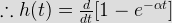
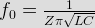
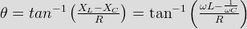
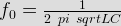
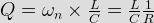
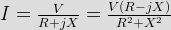
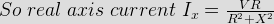
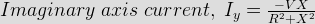
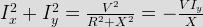
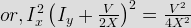

Step response is given as [1 – e -α t]u(t)
h(t) is an impulse response.

In a pure parallel LC circuit under resonance condition, current drawn from main supply is
Current in LC circuit is 0 at resonance, because of infinite of parallel LC circuit.
Z may comprise of following circuit
Series combination of 2.5 mH & 16&mm; F will result in a lossless resonant L-C circuit with constant V.
But parallel combination of 2.5 mH & 16 μ F will result in an exponentially increasing sinusoidal response as shown.
In a RLC circuit (series) if C is increasing & remaining R & L are constants, then resonant frequency will be
As resonant frequency, f0,

If all the transmission zeros of a network are at infinity then it is a
lim T(s) = 0
s → ∞
So it will be a low pass filter.
At lower half power frequency current in series R-L-C circuit has the phase relation with reference to supply voltage as

A circuit with a resistor, inductor and capacitor in series is resonant of f0 Hz. If all the component values are now doubled the new resonant frequency is
Resonant frequency, f0,

In a series RLC high Q circuit, the current peaks at a frequency

Now high Q means low R, C & high L.
So bandwidth = f0/Q
Since less bandwidth, hence sharp resonance.
A sinusoidal voltage V & frequency f connected to a series circuit at variable resistance R and a fixed reactance X. The locus of the tip of the current phase or I as R is varied from zero to infinity is





Above equation is a semicircle equation with radius V/2X.
In the network shown below, switch S was closed & steady state is a attained. If S is opened at t = 0 & i(t) = 2 cos 100t then what is the value of V ?
Circuit starts oscillating when switch is opened.
Here I = 2, R = 2.5 Ω.
Circuit shown below has been in steady state when switch S is opened, the current I is given by
When the switch is closed and circuit reached its steady state condition. Since inductor offers short circuit path. So
I = 10 / 1 = 10A
Now, when switch is opened,
The current i(t) at any instant t in the network shown in the figure will be after closing the switch S at t = 0
The value of the current at t = 0 + and at t = infinity; which should be zero and 10 / 1 = 10 A respectively.
A series RLC circuit consisting of R = 20 ohms XL = 20 ohms is connected across an ac supply of 200 V rms. The rms voltage across the capacitor is
Z = 20 ohms
I = 200 / 20 = 10 A
V C = –JIXC.
In a RC circuit consisting R = 10KΩ &phase angle between current &voltage is 45° What is the value of C at Ω = 1 ?
&theata; = tan - 1 (XC /R)
So, XC/R = 1
XC = 10 KΩ
or, 1/ C = 10KΩ.
In a series RLC circuit the phasor diagram shown as below. Which of following is true regarding phasor diagram for the series RLC circuit ?
Here VC > VL, 1/Ω C > Ω L.
In a RLC series circuit consisting VR = 3V, V VC=8V & V VL = 4 V, Find the value of source excitation voltage ?
.
In a parallel RL Circuit has i = 10A *amp; i VR = 8A. Find the value of current flowing through the inductor ?
.
If a capacitor is added in parallel with inductor C in the above question, which draws a current of 6A then i will be
.
Consider the following circuit diagram. If R = 25Ω X VL = X VC = 25Ω then what is the value of &theata; j ? [Assuming V as reference phasor]
![I(t) = I_{final} + [I_{initial} – I_{final}] \ times e^ { – \frac {Rt} {L}}= 10 e^{– 2t}](11.png "I(t) = I_{final} + [I_{initial} – I_{final}] \ times e^ { – \frac {Rt} {L}}= 10 e^{– 2t}")
^2}= R\;\; (Since |X _C|=20\;ohms)")
^2 + V_R^2}") .
. .
.^2}") .
. by
by